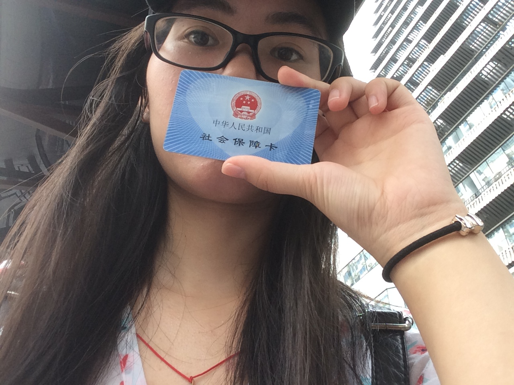
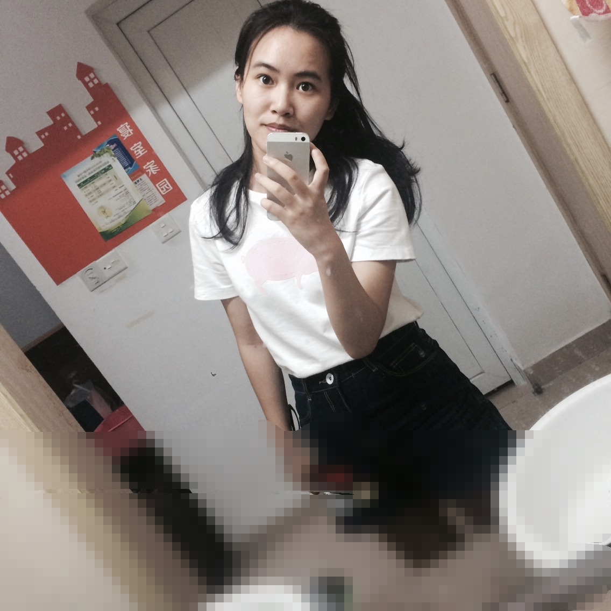

我是个算比较虔诚的天主教徒吧，我是这么认为自己的（笑）
这个算合格的人内心有千百次想去教堂的冲动，今天终于付诸于现实，这是我第一次去杭州的天主教堂。
今天是星期三，不是主日，所以没有弥撒，但教堂里的人都是很好的，会让你进去，即使你是外教人，他们也不会把你拦在门外，因为他们是在传播福音，是在让更多人相信天主的。一开始我貌似找错了教堂，因为杭州天主教堂旁边是还有一座别的用处的教堂（我猜），那里不能走进去，然后心里就有点失落，毕竟从学校到教堂距离有点远，这不能进去心里总有点不好受。但手机导航的及时出现让这有了转机。
这里的教堂规模比较小，没有像我们家那边的大规模。其实我比较期待有圣母玛利亚池子的，因为家里的教堂有，但很可惜，可能杭州的地太贵了，还有一点，杭州大部分是外来者，宗教需要长久的传承，人们迁来迁去太频繁，根基容易松散，奉献的人也越来越少，规模也不能建大了。走进教堂，门口就有免费供应的茶水，还有贴心的一次性杯子，超级暖的。我询问那边的叔叔能不能告解，叔叔说神父现在是不在的，要晚上才能办的。然后我就进了堂里，想去祈祷一下。进去之后，跪在板凳上，眼泪刷刷刷就流下来了，我也不知道为什么，反正自己是被自己感动到了。我默念了一些我所能背诵的经，再跟他们说了一些话就出来了。感觉自己内心还是非常激动的，虽然时间很短，但意义十分非凡。希望自己能在弥撒日的时候前来弥撒，接受天主的祝福。
我一直认为拥有宗教信仰是十分重要的，不管是否存在，但这总能在困难，危险时刻安抚我们脆弱的心灵。我从出生时，我外婆就把我抱去领洗，我接受这种神圣美好的时刻已有二十多年。这期间我有过痛苦不堪，想结束自己生命的时刻，但这种信仰让我坚持下来，主不会让你结束自己性命的，到时间自会命运安排。所以你会感觉整个人是干净的，坚定的，有目标的。这便是宗教的力量。
大学时光即将过去，我觉得不能总待在寝室里，还是要有点记忆的事，故把独自游玩之迹记录-游记。
 公交卡里终于有钱了
 旧照